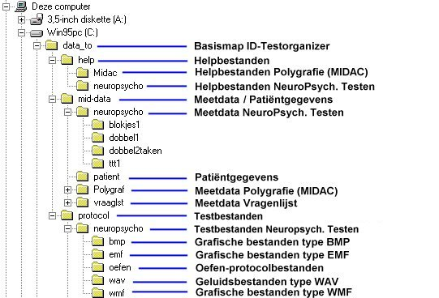

|
Extra informatie over module NeuroPsychologische Testen
INHOUDSOPGAVE
Standaard
directory-structuur
Opbouw
van een resultaatbestand
Opbouw
van het NPI-bestand met algemene module-instellingen
Opbouw
van een testbestand
Overzicht
van toetsenbordcodes in test- en resultaatbestanden
Overzicht
van muiscodes in test- en resultaatbestanden
Overzicht
van MPT-Knoppenkast-codes in test- en resultaatbestanden
In het algemeen zal het niet nodig
zijn om de directory-structuur te kennen.
In sommige gevallen (bijvoorbeeld
bij het bewerken van een test, waarbij geluidsbestanden gebruikt worden)
is het handig om te weten waar bepaalde bestandsgroepen worden opgeslagen
op de harde schijf.

Basisdirectory van de ID-Testorganizer: standaard op harde schijf C: in de map c:\data_to\.
Testbestanden, waarin alle gegevens
voor testafname zijn opgeslagen, staan in : c:\data_to\protocol\neuropsycho\.
In submap oefen binnen deze
map (dus: c:\data_to\protocol\neuropsycho\oefen\) staan de testbestanden
die bij oefen-sessies gebruikt worden. Deze testbestanden hebben dezelfde
naam als de testbestanden die bij de echte testafname worden gebruikt,
maar staan dus in een submap.
Alle grafische en geluidsbestanden,
die gebruikt worden bij een test staan eveneens in submappen binnen c:\data_to\protocol\neuropsycho\.
De naam van zo'n submap is gelijk
aan de extensie van het betreffende grafische of geluidsbestand, momenteel
zijn dat: bmp, emf,
wmf (dit zijn allemaal typen grafische
bestanden) en wav (gebruikt voor geluidsbestanden).
Helpbestanden staan in: c:\data_to\help\neuropsycho\. De helpbestanden zijn HTML-bestanden die m.b.v. een internet-verkenner bekeken kunnen worden. Wanneer binnen het programma op een help-knop wordt geklikt, dat wordt automatisch het meest relevante helpbestand gestart m.b.v. een in het programma aanwezige HTML-verkenner. Het basis helpbestand is bestand neuropsycho.htm. Hierin staan verwijzingen naar alle aanwezige HTML-documenten.
Databestanden of resultaatbestanden,
waarin de resultaten van een afgenomen test worden opgeslagen, staan in
submappen binnen: c:\data_to\mid-data\neuropsycho\.
De naam van de submap is gelijk
aan de naam van de betreffende test. Databestanden hebben als naamdeel
het patiëntnummer en als extensie de letter 'd' gevolgd door
een 2-cijferig volgnummer. Wanneer databestanden voor bijv. backup-doeleinden
gekopiëerd moeten worden, dan wordt aangeraden om dit te doen met
de Copy-knop binnen de Testorganizer. Dan worden namelijk alle relevante
bestanden gekopiëerd.
Alle specifieke programmabestanden
staan in de map c:\data_to\. De inhoud van deze map mag NOOIT
gewijzigd worden !
Opbouw
van een resultaatbestand 
!! WAARSCHUWING
!!
Het bestand
mag niet worden gewijzigd, want wordt daardoor mogelijk onbruikbaar voor
verdere verwerking.
Het formaat
van dit bestand kan worden gewijzigd wanneer dat noodzakelijk is voor toekomstige
uitbreidingen van het programma.
Een resultaatbestand, zoals gebruikt
bij module NeuroPsychologische Testen, heeft de vorm van een Windows-INI-bestand.
Er zijn 2 secties: Algemeen en MeetData.
Sectie Algemeen
In Sectie Algemeen staan 5 regels
met algemene gegevens:
Sectie MeetData
In Sectie MeetData staat voor elk
uitgevoerd item een regel met het resultaat van één of meerdere
sub-items (een sub-item is een invoer-object waarbij werd ingesteld dat
het resultaat moet worden opgeslagen).
Elke regel bevat na het '='-teken
één of meer sets van 6 gegevensvelden.
Wanneer er echter in een item géén
invoerobject voorkomt, dan is de regel na het '='-teken verder leeg.
De gegevensvelden worden onderling
gescheiden door komma's, verschillende sets gegevensvelden door een verticale
streep (|).
Dit zijn de 6 gegevensvelden:
Veld 1: Type invoerapparaat, 4 lettersVoorbeeld van een resultaatbestand
KBRD = toetsenbord
MUIS = muis
MPTK = MPT-Knoppenkast
Veld 2: Soort meting, 1 letter
Afhankelijk van Type invoerapparaat:
toetsenbord: R = Reactietijdmeting; T = Tekstinvoer
muis: R = Reactietijdmeting; D = Reactietijd + Muisdoel
MPT-Knoppenkast: I = Reactietijdmeting waarbij de gewenste knop moet worden Ingedrukt; L = Reactietijdmeting waarbij de gewenste knop moet worden Losgelaten; F = MPT-fingertappingmeting
Veld 3: Gemeten Reactietijd in millisec, max. 6 cijfers
In geval van een MPT-fingertappingmeting: de gemiddelde tussen-toetstijd over de gehele meting
Veld 4: Typering meetresultaat, 1 cijfer
0 = fout
1 = goed
In geval van een MPT-fingertappingmeting staat hier altijd 1
Veld 5: Gewenste + Toegestane invoer of Gewenste tekst, max. 200 letters of cijfers
Bij invoerapparaat toetsenbord, soort meting Tekstinvoer staat hier de gewenste tekst.
Bij invoerapparaat toetsenbord, soort meting Reactietijd staat hier gecodeerd eerst de gewenste toets en daarna alle toegestane toetsen. Klik op deze regel voor een overzicht van de gebruikte codering.
Bij invoerapparaat muis, alle soorten meting, staat hier gecodeerd de gewenste toets. Klik op deze regel voor een overzicht van de gebruikte codering.
Bij invoerapparaat MPT-knoppenkast: het nummer (of nummers) van de gewenste knop (of knoppen).
Veld 6: De ingevoerde toets of tekst, max. 50 letters of cijfers
Bij invoerapparaat toetsenbord, soort meting Tekstinvoer, staat hier de ingevoerde tekst.
Bij invoerapparaat toetsenbord, soort meting Reactietijd, staat hier gecodeerd de ingevoerde toets. Klik op deze regel voor een overzicht van de gebruikte codering.
Bij invoerapparaat muis, alle soorten meting, staat hier gecodeerd de ingevoerde toets. Klik op deze regel voor een overzicht van de gebruikte codering.
Bij invoerapparaat MPT-knoppenkast: het nummer van de ingevoerde knop.
In geval van een MPT-fingertappingmeting staan vanaf veld 6 alle resultaten gescheiden door komma's (Gem. tijd en SD over interval 1, Gem. tijd en SD over interval 2, ..., Gem. tijd en SD over de gehele meting).
[MeetData]
Taak1=KBRD,R,774,0,KUPKLEKDOKRI,KDO
Taak2=KBRD,R,320,1,KLEKDOKRIKUP,KLE
Taak3=KBRD,R,363,1,KRIKDOKUPKLE,KRI
Taak4=KBRD,R,427,0,KUPKDOKRIKLE,KDO|KBRD,R,1806,1,KUPKDOKRIKLE,KUP
Taak5=KBRD,R,1806,1,KUPKDOKRIKLE,KUP
Taak6=KBRD,R,532,1,KDOKRIKUPKLE,KDO
Taak7=KBRD,R,498,1,KLEKDOKRIKUP,KLE|KBRD,R,660,0,KDOKRIKUPKLE,KLE
Taak8=KBRD,R,425,1,KRIKDOKUPKLE,
Taak9=KBRD,R,660,0,KDOKRIKUPKLE,KLE
Taak10=MPTK,F,660,1,0,1091,113.60,866,31.88,850,13.68,854,51.03,850,28.38,792,53.78,660,20.34
Taak11=MPTK,I,2120,1,0,0|MPTK,L,560,1,0,0|MPTK,I,260,0,2,3
[Algemeen]
About=Resultaatbestand
module NeuroPsychologische Testen
Versienummer=NeuroPsychologische
Testen 2.0, 29-06-2001
Copyright=Instrumentele
Dienst, UMC St Radboud
Protocolbestand=c:\data_to\protocol\NeuroPsycho\blokjes1.ini
AantalUitgevoerdeTaken=11
PatientLinkshandig=0
TestUitgevoerdMetLinkerhand=1
Opmerking: de oorspronkelijke
benaming van item was taak. In het resultaatbestand is de benaming taak
in gebruik gebleven (om conversieproblemen met bestaande metingen te vermijden).
Opbouw
van het NPI-bestand met algemene module-instellingen 
!! WAARSCHUWING
!!
Het bestand
mag niet worden gewijzigd, want wordt daardoor mogelijk onbruikbaar voor
verdere verwerking.
De opbouw
van dit bestand kan worden gewijzigd wanneer dat noodzakelijk is voor toekomstige
uitbreidingen van het programma.
Dit is een tekstbestand van het Windows-INI-type.
Het bestand heeft altijd de naam
Neuropsycho.npi
en staat altijd in de programma-map.
Het bestand heeft slechts 1 sectie: Algemeen
Sectie Algemeen
In Sectie Algemeen staan 4 regels:
Voorbeeld van een npi-bestand
[Algemeen]
Versienummer=NeuroPsychologischeTesten
versie 2.0.0.101
GrafObjectAlijdZichtbaar=0
ToonHints=1
MPT-COMport=2
Dit onderdeel is nog niet gereed.
Overzicht
van toetsenbordcodes in test- en resultaatbestanden 
De geselecteerde toegestane toetsen
en de geselecteerde gewenste toets worden in protocol- en resultaatbestanden
gecodeerd opgeslagen.
De code van een toets begint altijd
met de hoofdletter K en wordt gevolgd door één kleine letter
òf door één cijfer òf door twee hoofdletters.
Hoofdletter
K en één kleine letter
Het betreft een alfa-toets (letter-toets)
aangegeven door de kleine letter.
Voorbeeld: Ka = toets A; Kb = Toets
B; enz.
Hoofdletter
K en één cijfer
Het betreft een numerieke toets
(cijfer-toets) aangegeven door het cijfer.
Voorbeeld: K0 = toets 0; K1 = Toets
1; enz.
Hoofdletter
K gevolgd door twee hoofdletters
Het betreft een niet-alfanumerieke
toets, volgens onderstaande lijst.
| KF1 = toets F1 | KES = toets Escape | KDE = toets Del | KUP = toets Arrow Up |
| KF2 = toets F2 | KLQ = toets ` (Left Quote) | KEN = toets End | KDO = toets Arrow Down |
| KF3 = toets F3 | KMI = toets - (Minus) | KPD = toets PageDown | KLE = toets Arrow Left |
| KF4 = toets F4 | KIS = toets = | KRE = toets Return (Enter) | KRI = toets Arrow Right |
| KF5 = toets F5 | KBS = toets \ (Backslash) | KLS = toets Left Shift | KCO = toets , (Comma) |
| KF6 = toets F6 | KBA = toets Backspace | KRS = toets Right Shift | KPO = toets . (Point) |
| KF7 = toets F7 | KIN = toets Insert | KLC = toets Left Control | KFS = toets / (Forward Slash) |
| KF8 = toets F8 | KHO = toets Home | KRC = toets Right Control | KSP = Spacebar |
| KF9 = toets F9 | KPU = toets PageUp | KLA = toets Left Alt | |
| FV0 = toets F10 | KTA = toets Tab | KRA = toets Right Alt | |
| KV1 = toets F11 | KLB = toets [ (Left Bracket) | KSC = toets ; (Semicolon) | |
| KV2 = toets F12 | KRB = toets ] (Right Bracket) | KRQ = toets ' (Right Quote) |
Overzicht
van muiscodes in test- en resultaatbestanden 
De gewenste en ingevoerde muistoets
wordt in protocol- en resultaatbestanden gecodeerd opgeslagen.
| MLB = Linker muisknop |
| MMB = Middelste muisknop |
| MRB = Rechter muisknop |
Opmerking: wanneer bij een patiënt
linkshandigheid is ingesteld dan wordt een gewenste linker muisknop in
het protocolbestand bij testafname geïnterpreteerd als een rechter
muisknop en omgekeerd.
Overzicht
van MPTKnoppenkast-codes in test- en resultaatbestanden 
Elke knop op de MPTKnoppenkast wordt
met een cijfer uit de reeks 0..5 aangeduid.
Bij linkshandige patiënten
worden de linker en rechter knoppen gespiegeld (knop 1 wordt knop 5, knop
2 wordt knop 4, knop 4 wordt knop 2, knop 5 wordt knop 1).
| 0 = Knop middenonder |
| 1 = Knop linksonder (bij linkshandige patiënten echter: Knop rechtsonder) |
| 2 = Knop linksboven (bij linkshandige patiënten echter: Knop rechtsboven) |
| 3 = Knop middenboven |
| 4 = Knop rechtsboven (bij linkshandige patiënten echter: Knop linksboven) |
| 5 = Knop rechtsonder (bij linkshandige patiënten echter: Knop linksonder) |